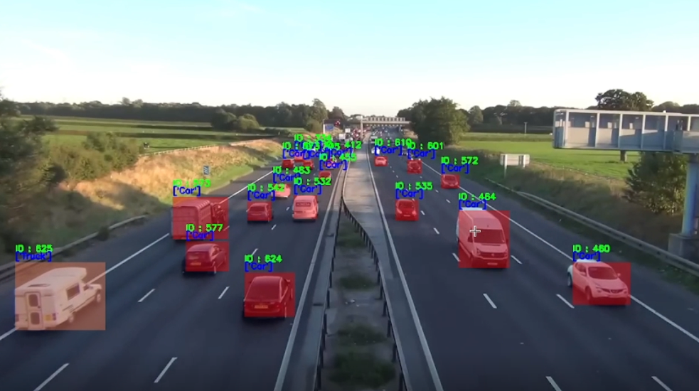
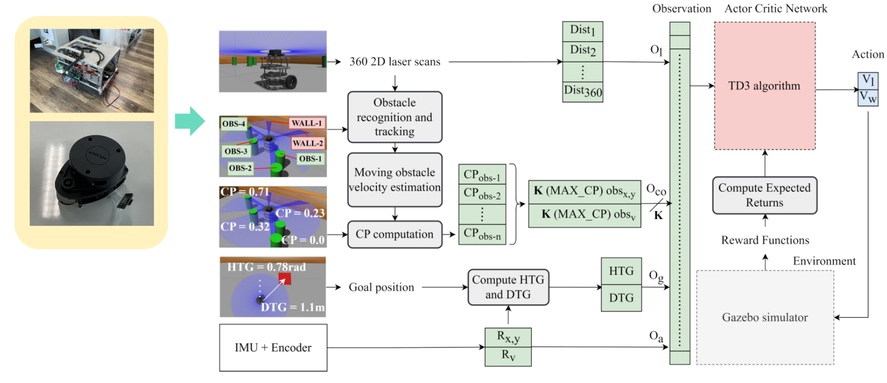
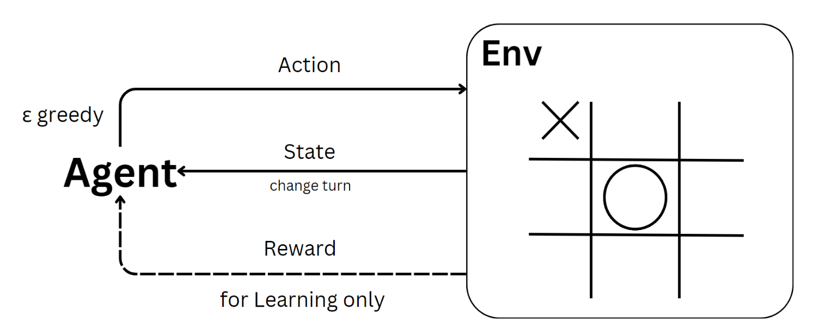
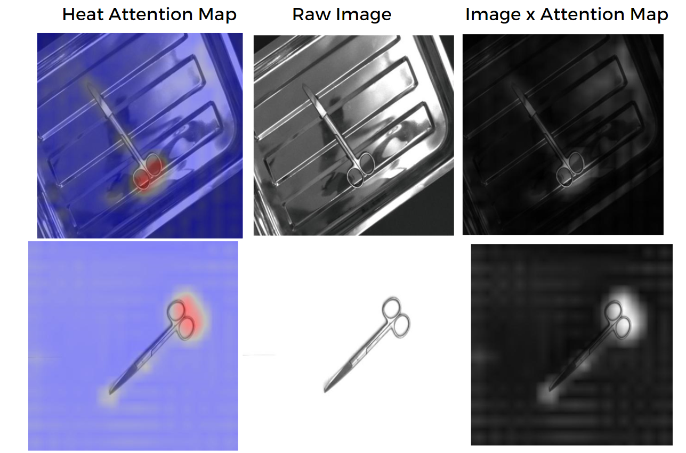
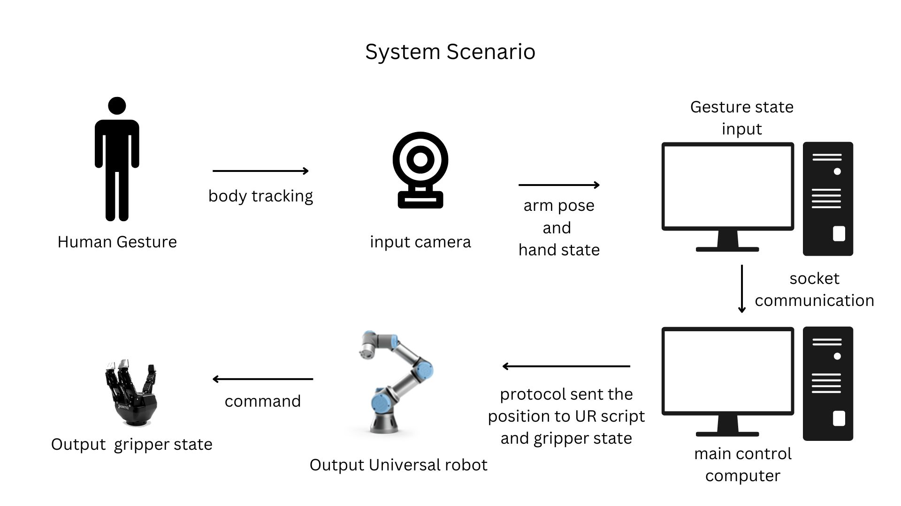
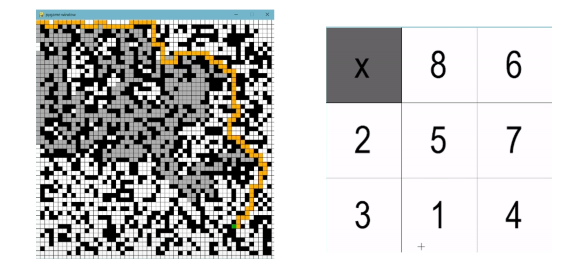
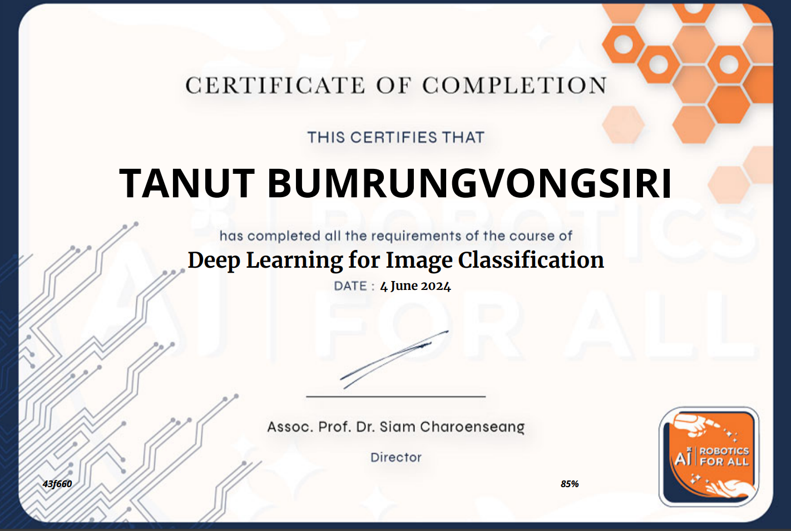
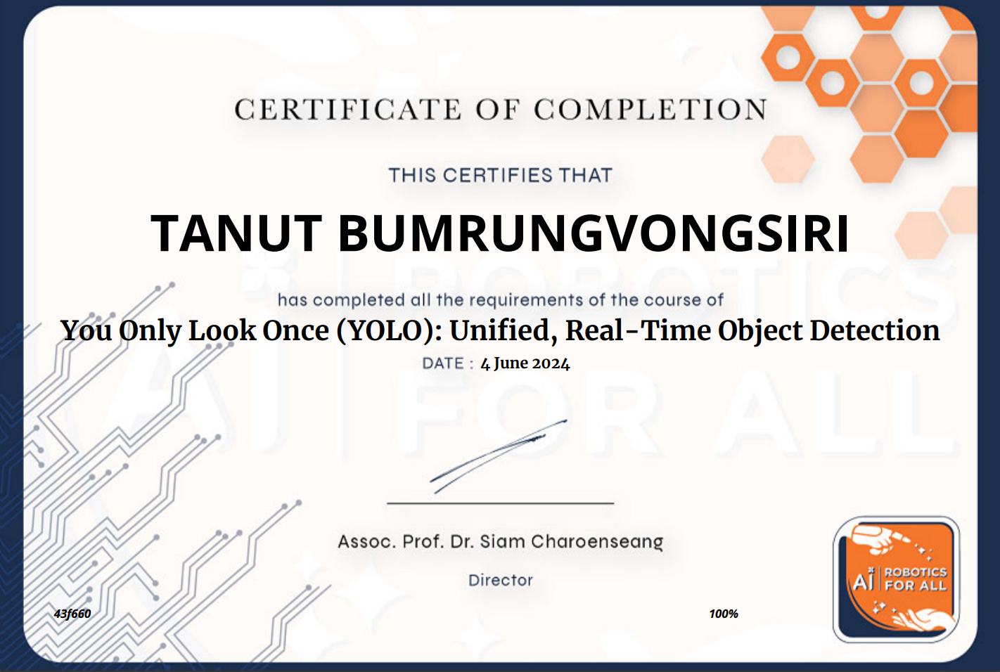
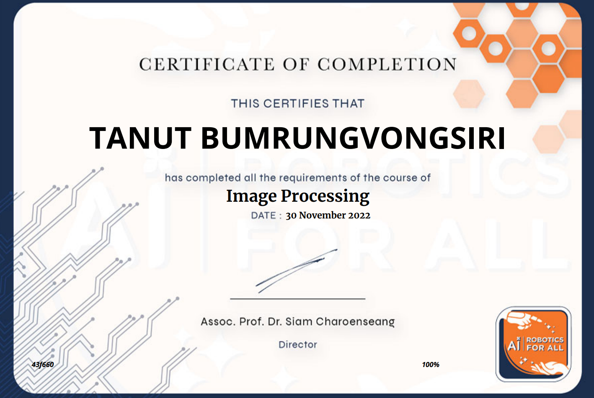

01Core Areas of Expertise
Computer Vision
- Object detection and feature recognition (YOLO, R-CNN)
- Image generation (GANs, Diffusion Models, VAEs)
- OCR pipelines for structured information extraction
- Vision-Language Models (VLMs) for semantic understanding
Natural Language Processing
- Large Language Models (LLMs)
- Vision-Language Models (VLMs)
- Multimodal models for text and visual data
- Automated semantic understanding
Reinforcement Learning
- Q-Learning and Deep Q-Learning (DQN)
- Continuous control algorithms (DDPG, TD3)
- Intelligent decision-making agents
- Optimization and control problems
Technical Skills
AI Frameworks & Tools
- PyTorch, TensorFlow, Keras
- Transformers (Hugging Face), Ultralytics, scikit-learn
- Fine-tuning and model optimization (including VLM-LoRA)
Programming Languages
- Advanced — Python
- Intermediate — C, C++, C#
Tools & Technologies
- Backend & Deployment — FastAPI, Docker, Linux
- Image Processing — OpenCV, Pillow
- Data Visualization — Seaborn, Matplotlib
- Database — MySQL · Robotics — ROS2
02Education
Bachelor's in Robotics and Automation Engineering
- GPAX: 3.74 / 4.00 First-Class Honors
- Relevant Coursework: Artificial Intelligence, Machine Learning, Pattern Recognition, Natural Language Processing, Reinforcement Learning, Image Processing, Calculus, Statistics & Probability
03Professional Experience
July 2024 – Present
Vulcorn AI
AI/ML Engineer
Bangkok, Thailand · Full-time
Digitalization for 2D Technical Engineering Drawings
- Designed and implemented an end-to-end pipeline for extracting textual and semantic information from 2D technical engineering drawings
- Applied fine-tuned transformer-based OCR models to achieve high-accuracy text detection and recognition across complex drawing layouts
- Leveraged fine-tuned Vision-Language Models (VLMs) to semantically understand and extract key metadata from 2D technical engineering drawings
Digital Rebranding and Standardization for 2D Technical Drawings
- Implemented an automated pipeline to mask sensitive title block metadata in 2D engineering drawings and replace it with standardized, company-branded layouts
- Utilized AI-based OCR and vision models to extract essential metadata while ensuring sensitive and proprietary information is protected
June 2023 – November 2023
Bangkok Unitrade Co., Ltd.
AI/ML Engineer & Software Developer
Bangkok, Thailand · 6-month Internship
Multi-view Classification for Surgical Instruments
- Adapted object detection for surgical instruments moving along a conveyor belt for classification, employing YOLOv8
- Conducted research and applied a multi-view classification model to fine-grained classify surgical instruments, achieving 99.4% accuracy on 44 surgical instrument classes
Software Development
- Developed a software application with a PyQt5 graphical user interface (GUI) for integrating AI-powered object detection and classification
- Implemented logging functionality to record predictions in a MySQL database
04Projects

June 2024
Vehicle Tracking using YOLOv8 + SORT
- Leveraged YOLOv8 for vehicle detection on the road
- Implemented vehicle tracking utilizing SORT with Kalman filters for accurate estimation and tracking

May 2024
Deep Learning-based Navigation for Mobile Robots in Dynamic Environments
- Utilized mathematics to group LiDAR clusters and track obstacles in each frame
- Adapted TD3 and SAC deep reinforcement learning algorithms for mobile robot navigation
- Analyzed the performance of deep reinforcement learning algorithms
Team project — responsible for the deep reinforcement learning component
View on GitHub
April 2024
Solving Tic-Tac-Toe with Reinforcement Learning
- Applied Q-Learning, SARSA, and Double Q-Learning to train an agent to play Tic-Tac-Toe
- Compared the performance of the Q-Learning, SARSA, and Double Q-Learning algorithms

March 2023
Image Classification of Surgical Instruments
- Fine-tuned ResNet-50 and VGG-16 models pre-trained on ImageNet
- Enhanced the model's capability to focus on relevant features with SEResNet50
- Adapted fine-grained classification techniques: WSDAN and Bilinear Pooling
- Compared and analyzed the results

November 2022
Telemanipulation of Robot Hand using Human Gesture
- Adapted the MediaPipe and OpenCV libraries to track and support 4 human gestures
- Controlled a universal robot arm and gripper using human gestures
- Socket-based communication between a client and server over the network

October 2022
Solving the 8-Puzzle and Mazes with AI
- Designed and developed software using Pygame, utilizing the A* algorithm to efficiently solve the 8-puzzle game
- Implemented an A* search algorithm with modifications to efficiently solve maze pathfinding problems
05Publication
Automated Bounding Dimension Retrieval: A Machine Learning-Driven Framework for Engineering Drawing Interpretation
06Certification

4 June 2024
Deep Learning for Image Classification
learn.thairobotics
- Convolutional Neural Networks (CNN)
- Pooling Layers — Max Pooling, Average Pooling
- Activation Functions — Sigmoid, Softmax, ReLU
- Basics of image classification with CNN

4 June 2024
You Only Look Once (YOLO): Unified, Real-Time Object Detection
learn.thairobotics
- YOLO architecture and unified detection pipeline
- Real-time object detection fundamentals

30 November 2022
Image Processing
learn.thairobotics
- How convolution works
- Edge detection — Sobel kernel
- Filter methods — Median Blur, Gaussian Blur
- Morphological operations — dilation, erosion, closing, opening
07Contact
Open to AI/ML opportunities and collaborations — the fastest way to reach me is email.